2020年北京市中考数学试题 · 数学解答题 第24题 · 对应解析
24.小云在学习过程中遇到一个函数
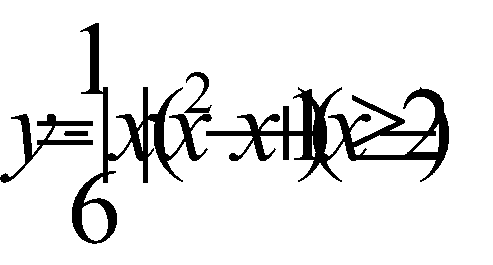
．下面是小云对其探究的过程，请补充完整：（1）当
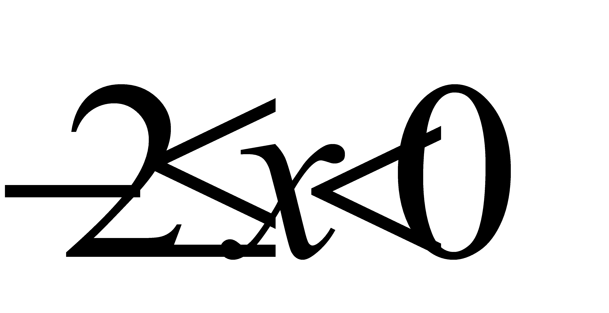
时，对于函数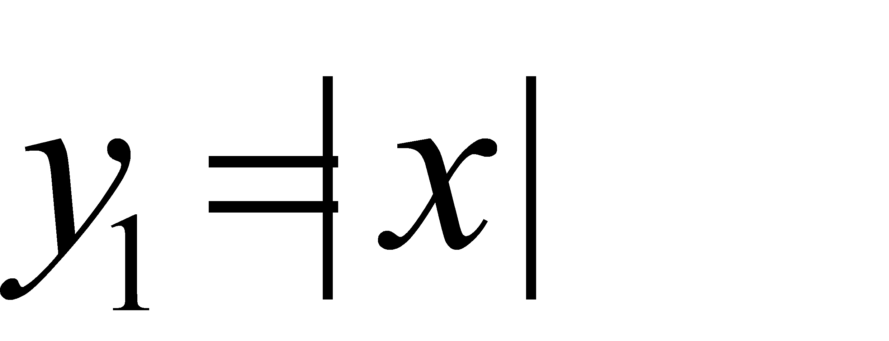
，即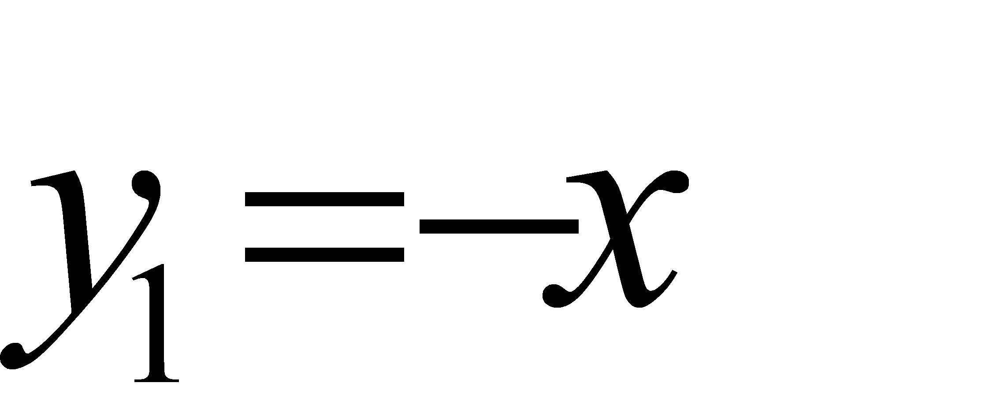
，当时，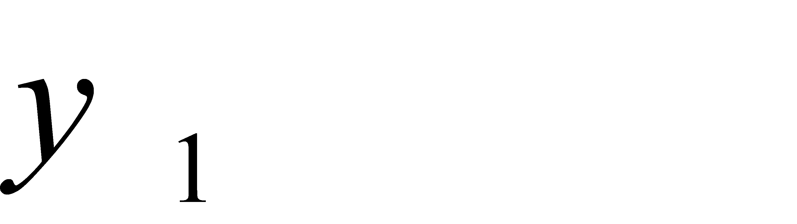
随 的增大而 ，且
的增大而 ，且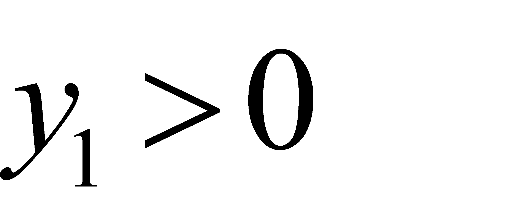
；对于函数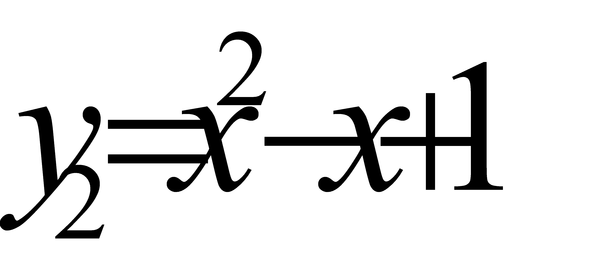
，当时，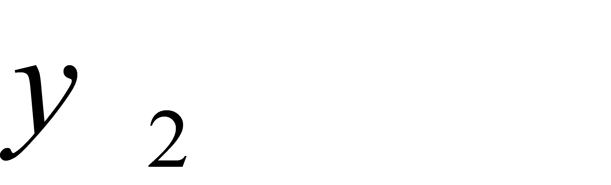
随的增大而 ，且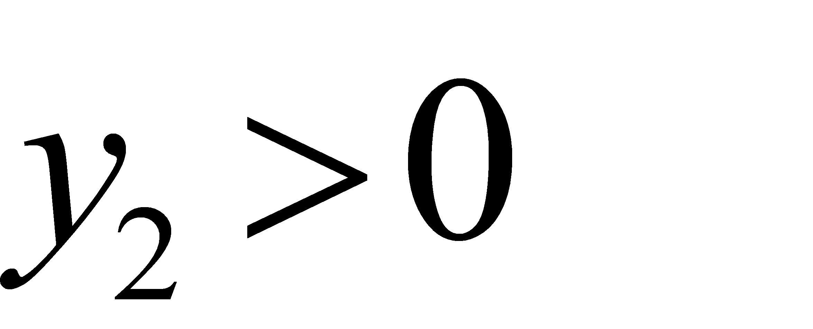
；结合上述分析，进一步探究发现，对于函数 ，当时，随的增大而 ．
，当时，随的增大而 ．（2）当
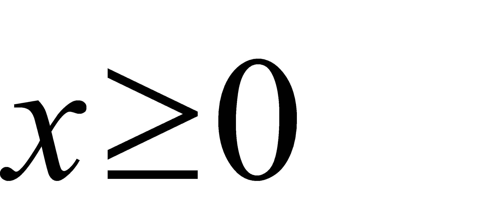
时，对于函数，当时，与的几组对应值如下表：
| 0 |
| 1 | 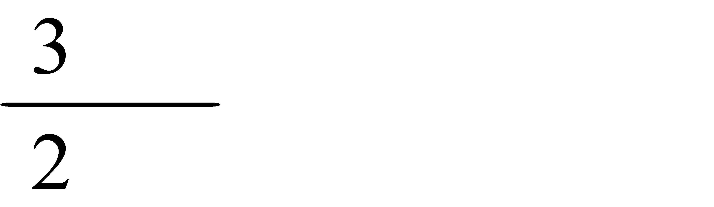 | 2 | 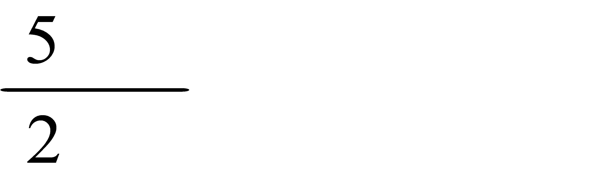 | 3 | 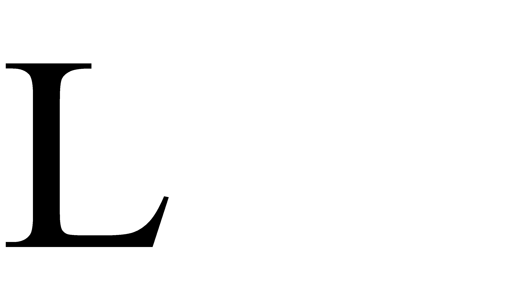 |
| 0 | 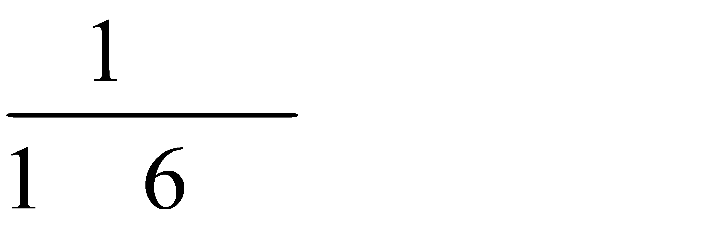 | 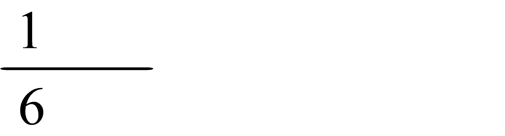 | 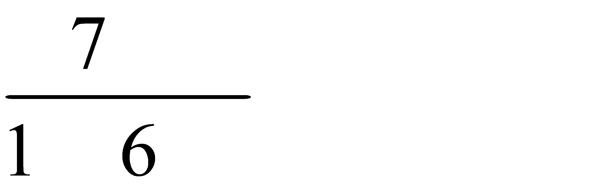 | 1 | 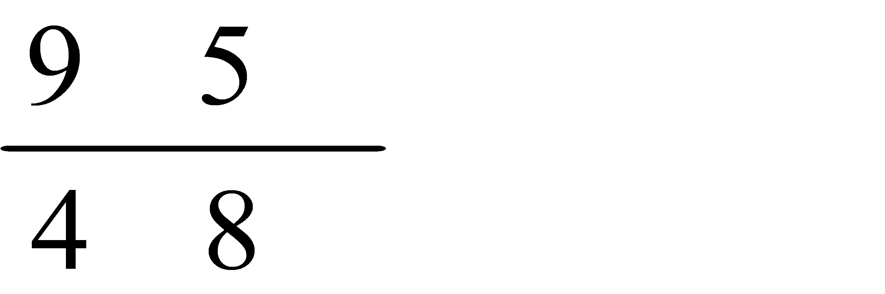 | 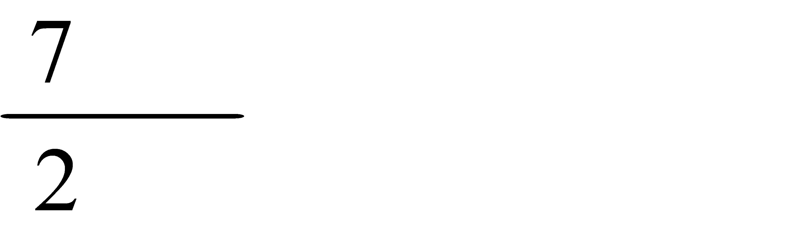 |

综合上表，进一步探究发现，当时，随的增大而增大．在平面直角坐标系 中，画出当时的函数的图象．
中，画出当时的函数的图象．
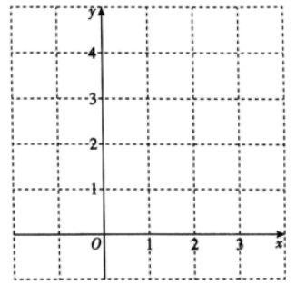
（3）过点(0，m)（ ）作平行于轴的直线
）作平行于轴的直线
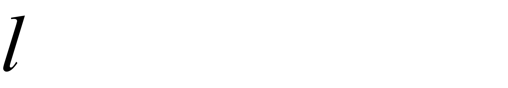
，结合（1）（2）的分析，解决问题：若直线与函数的图象有两个交点，则 的最大值是 ．
的最大值是 ．【答案】（1）减小，减小，减小；（2）见解析；（3）
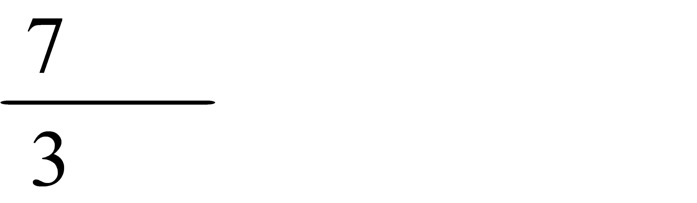
【解析】
【分析】
（1）根据一次函数的性质，二次函数的性质分别进行判断，即可得到答案；
（2）根据表格的数据，进行描点，连线，即可画出函数的图像；
（3）根据函数图像和性质，当
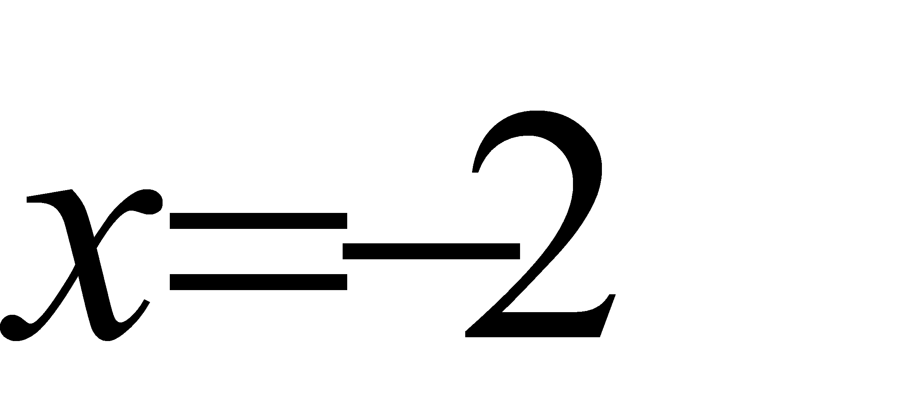
时，函数有最大值，代入计算即可得到答案．【详解】解：（1）根据题意，在函数中，
∵
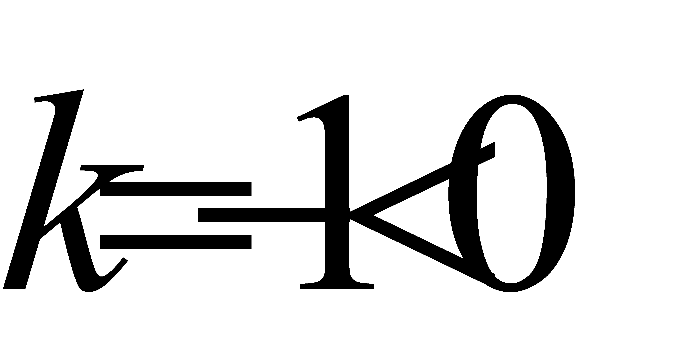
,∴函数在中，随的增大而减小；
∵
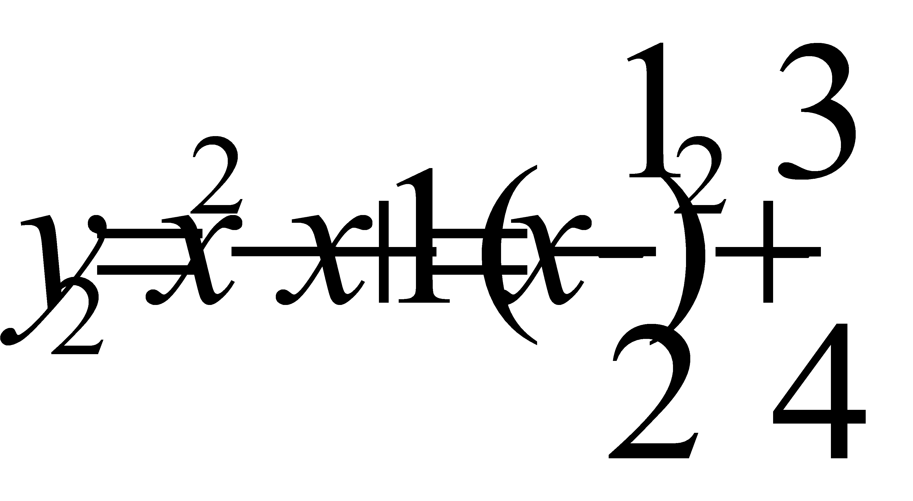
，∴对称轴为：
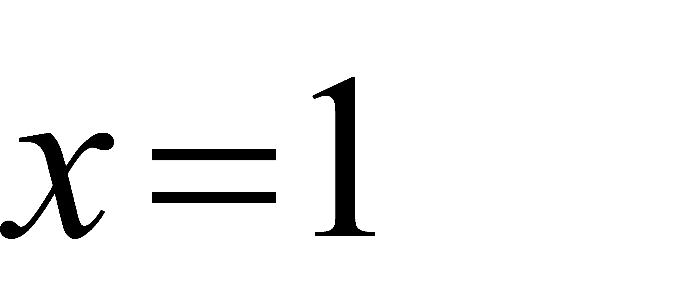
，∴在中，随的增大而减小；
综合上述，
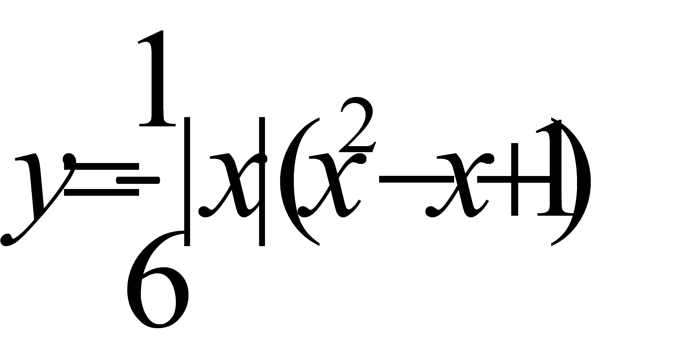
在中，随的增大而减小；故答案为：减小，减小，减小；
（2）根据表格描点，连成平滑的曲线，如图：
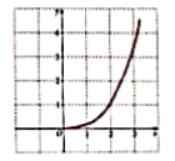
（3）由（2）可知，当时，随的增大而增大，无最大值；
由（1）可知在中，随的增大而减小；
∴在中，有
当时，
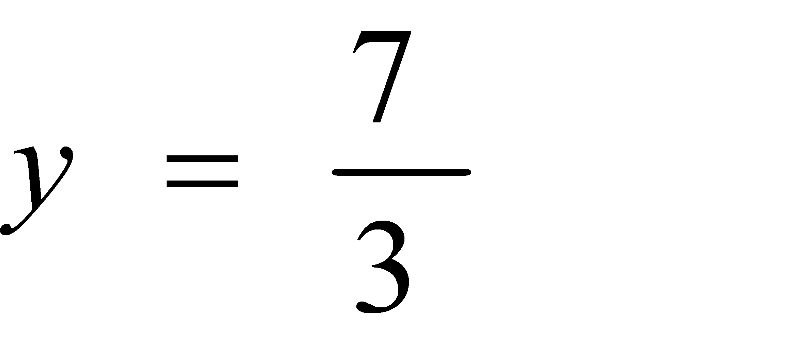
，∴m的最大值为；
故答案为：．
【点睛】本题考查了二次函数的性质，一次函数的性质，以及函数的最值问题，解题的关键是熟练掌握题意，正确的作出函数图像，并求函数的最大值．